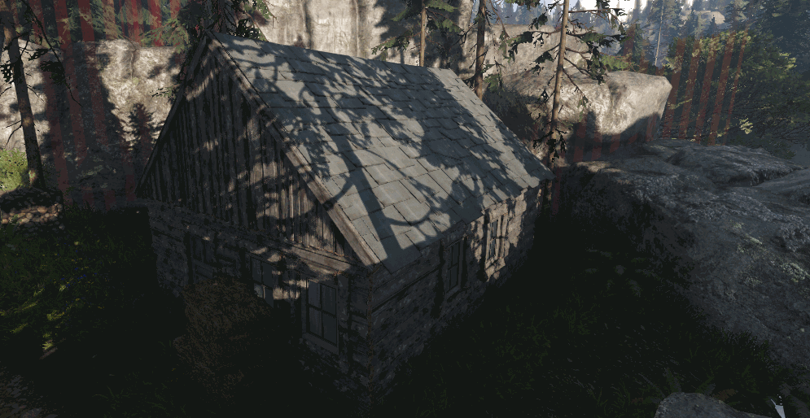
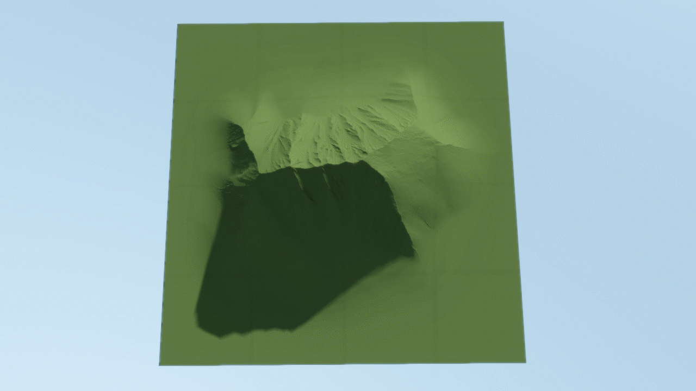

Обзор
Тени с трассировкой лучей рассчитывают путь отдельных лучей света от источника (света) до пункта назначения.
Тени с трассировкой лучей создают более физически точные тени, поэтому включение этой функции делает тени намного более реалистичными.
Тени с трассировкой лучей в CRYENGINE можно разбить на два компонента.
SVO Солнечные тени с трассировкой лучей
Эту функцию можно рассматривать как альтернативу кэшированным картам теней.

Если SVOGI уже используется на уровне, эта функция позволяет рассчитывать тени из мира static без следующих известных накладных расходов (кэшированных) карт теней:
- Никакой дополнительной работы над CPU
- Производительность не зависит от сложности сцены
- Прозрачные тени от прозрачных объектов, мягкие объемные тени от листьев вместо детальных теней карты теней, которые слишком шумны.
- Никаких дополнительных выделений огромных кэшированных карт теней на GPU.
- Нет необходимости в обновлении карты теней при движении солнца.
Тени SVO также обеспечивают мягкую полутень без дорогостоящей фильтрации, необходимой для традиционных карт теней.
Самый практичный вариант использования сейчас — ограничить количество каскадов солнечных теней до 2 и включить трассировку SVO теней.
Недостатком является то, что тени в некоторых случаях слишком мягкие, главным образом потому, что мягкость зависит от разрешения вокселей.
Реализация
Чтобы включить эту функцию, перейдите в Environment Editor -> Панель свойств -> Константы - Total Illumination Advanced и включи Тени от Солнца.
Если эта опция включена, система GI вычисляет дополнительную теневую маску, содержащую тени от всех вокселизированных объектов.
Затем эта маска сочетается с остальными тенями. Если эта функция не используется, для этого используется проход тени облаков.
Тени с трассировкой лучей на карте высот ландшафта
Эта функция позволяет отбрасывать тени со всей карты высот даже на расстоянии 8 км.

Это простая альтернатива традиционному подходу к картографированию теней для удаленных теней от больших гор.
По сравнению с картами теней преимуществами являются:
- Нет дополнительной памяти на GPU (текстуры и сетки) и системе RAM (сетки).
- Никакой дополнительной обработки CPU; все работает полностью на GPU
- Мягкая тень с очень большой полутенью возможна без тяжелых пиксельных шейдеров.
Для трассировки карты высот используются текстуры, уже выделенные для рендеринга ландшафта.
Тени генерируются при низком разрешении экрана, а затем масштабируются с помощью системы увеличения двойной глубины SVOGI.
Реализация
Чтобы включить эту функцию, перейдите в Environment Editor -> Панель свойств -> Константы - Total Illumination Advanced и включи Тени из карты высот.
Это будет иметь эффект только в том случае, если Тени от Солнца (см. выше) тоже включен.
CVars
Квар/Команда | Описание |
|---|---|
| e_svoTI_ShadowsFromHeightmap | Может использоваться для временного отключения/включения этой функции. |